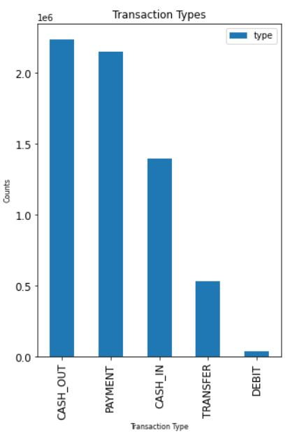
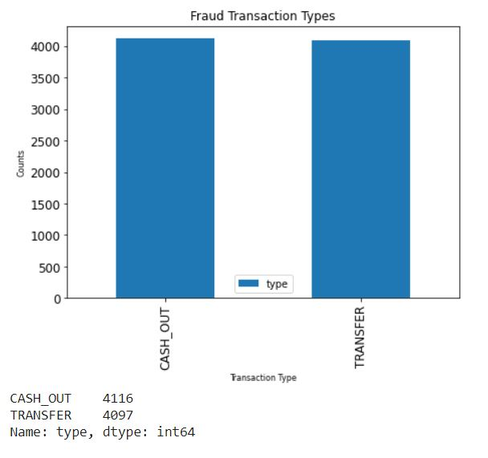
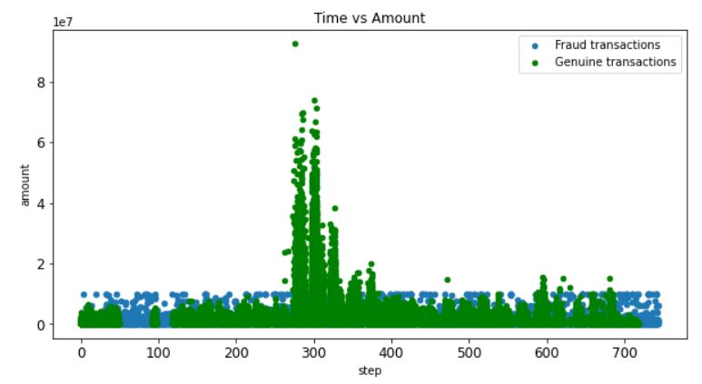
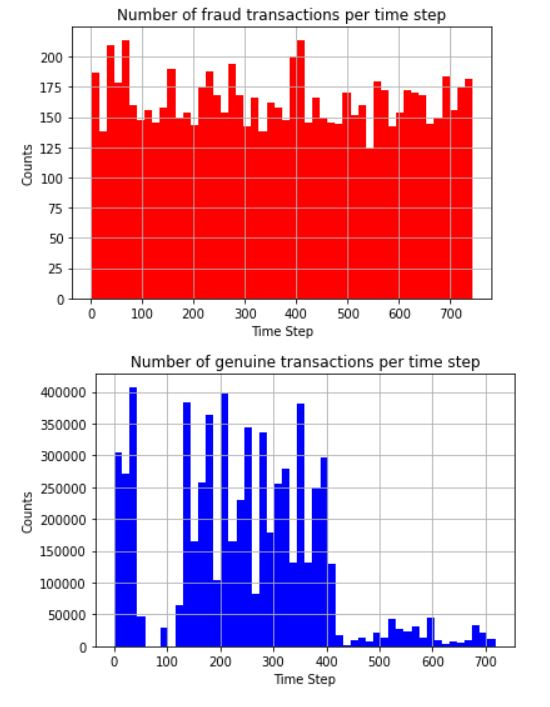
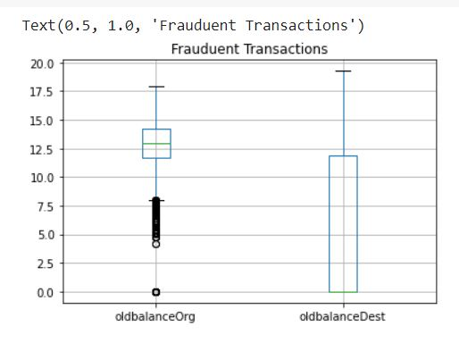
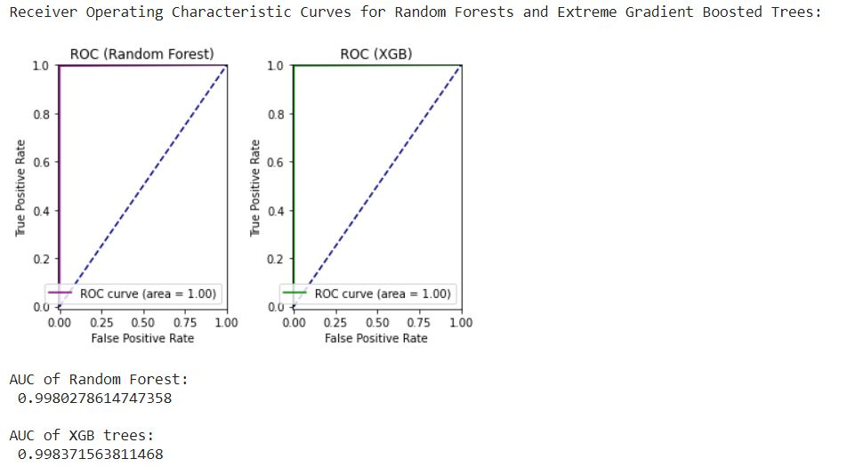

We are given a synthetic financial dataset generated using a simulator called PaySim in which some of the transactions are marked as fraudulent. Our task is to analyze the dataset by performing exploratory data analysis and finally train a suitable model to predict fraudulent financial transactions.
The dataset consists of almost 6.3 million rows of transacional data having 11 columns. The dataset is simulated version of real transactions extracted from one month of financial logs from a mobile money service implemented in an African country. Also, there are no missing values in the dataset.
Dataset: https://www.kaggle.com/ntnu-testimon/paysim1
To explain the data, we have the following columns:-
Number of times isFlaggedFraud is set: 16
Max amount transacted when isFlaggedFraud not set: 92445516.64
1. Types of Transactions
We can observe that the most common transaction types are the CASH_OUT and PAYMENT modes.
2. Types of transactions where isFraud is True
We can observe that the fraudulent transactions happens only with the CASH_OUT and TRANSFER modes and hence, we are interested in these two types only for fraud prediction.
3. Amount vs Time for Fraudulent/Genuine transactions
We can observe that fraudulent transactions are capped at 10 million currency units but genuine transactions exceed over 92 million units.
4. Number of Fraud/genuine transactions per time step
We can see that fraudulent transactions happens at a constant rate through out the month but genuine transactions has no such pattern.
5. Old Balance in origin vs destination accounts
From the above, we can see that for fraudulent transactions, the old balance in origin account is significantly higher thant the old balance in destination account. This shows that money is being stolen from a richer account to a new/poor account.
Confusion matrix for Random Forest Model
Confusion matrix for extreme Gradient Boosting (XGB) Trees
To compare the performances of both the models, we need to compare their confusion matrices.
Number of valid transactions labelled as fraudulent by Random Forest: 29
Number of valid transactions labelled as fraudulent by XGB trees: 12817
Number of fraud transactions labelled as valid by Random Forest: 392
Number of fraud transactions labelled as valid by XGB trees: 23
The better model is dependent on which of the above result is acceptable to us. According to me, the number of valid transactions labelled as fraudulent by XGB trees is way high. Therefore, according to me, Random Forests is the superior model here. We have also computed the AUC (Area Under Curve) to compare the performance where the XGB model has worked better. The curve in Area Under Curve is a plot of the true positive rates (in our case, the proportion of valid transactions labelled as valid) against the false positive rate (in our case, the proportion of fraudulent transactions labelled as valid). The curve is also known as the Receiver Operating Characteristic Curve or ROC. The plot of ROC curve can be seen below.
As said earlier, we can see that the 'errorBalanceOrg' feature has the highest importance because it denotes the differences between net origin balance and net destination balance which is most accurately related to the transaction being flagged as fraud or not.
Improvement: We can improve our results by also looking for approaches like undersampling the majority class or oversampling the minority class (SMOTE-preffered) and then use native classifiers like Logistic Regression on the balanced data.
Unique years: 2015, 2016, 2017
Total revenue for year 2015: 29036749.19
Total revenue for year 2016: 25730943.59
Total revenue for year 2017: 31417495.03
New customer revenue for year 2015: 29036749.19
New customer revenue for year 2016: 18245491.01
New customer revenue for year 2017: 28776235.04
Existing customer growth for year 2015: 0.0
Existing customer growth for year 2016: 7485452.58
Existing customer growth for year 2017: -4844192.59
Revenue lost from attrition for year 2015: 0.0
Revenue lost from attrition for year 2016: 21571632.07
Revenue lost from attrition for year 2017: 23110294.94
Existing Customer Revenue for year 2015: 0.0
Existing Customer Revenue for year 2016: 7485452.58
Existing Customer Revenue for year 2017: 2641259.99
Existing Customer Revenue Prior Year 2015: 0.0
Existing Customer Revenue Prior Year 2016: 0.0
Existing Customer Revenue Prior Year 2017: 7485452.58
Existing Customer Revenue Prior Year 2018: 2641259.99
Total Customers for year 2015: 231294
Total Customers for year 2016: 204646
Total Customers for year 2017: 249987
Total Previous Year Customers for year 2015: 0
Total Previous Year Customers for year 2016: 231294
Total Previous Year Customers for year 2017: 204646
Total Previous Year Customers for year 2018: 249987
Total New Customers for year 2015: 231294
Total New Customers for year 2016: 145062
Total New Customers for year 2017: 229028
Total Lost Customers for year 2015: 0
Total Lost Customers for year 2016: 171710
Total Lost Customers for year 2017: 183687